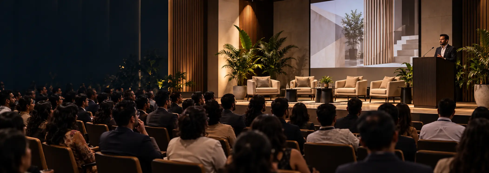
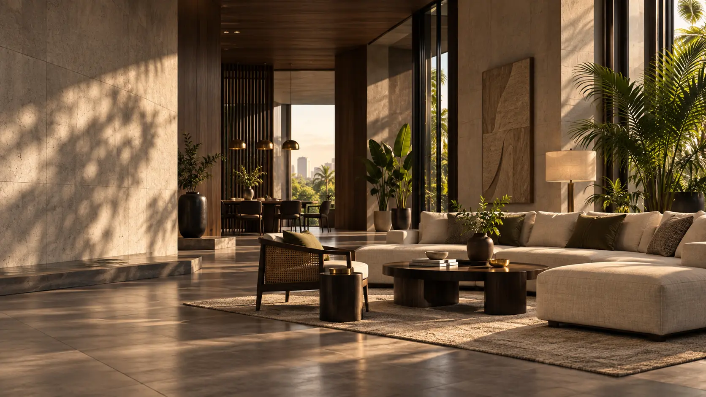
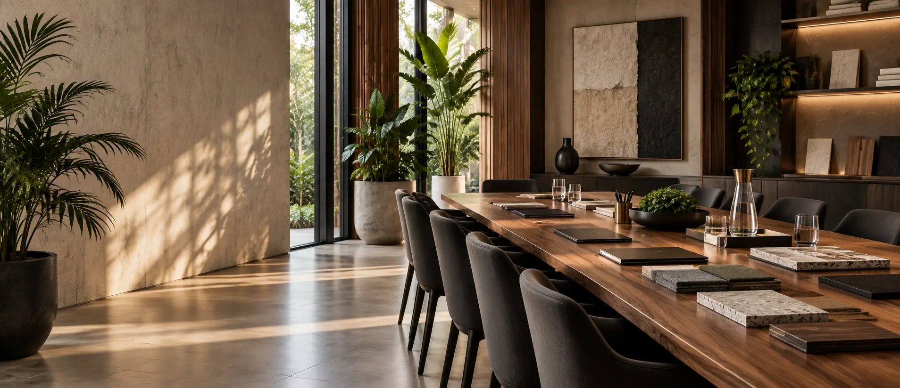
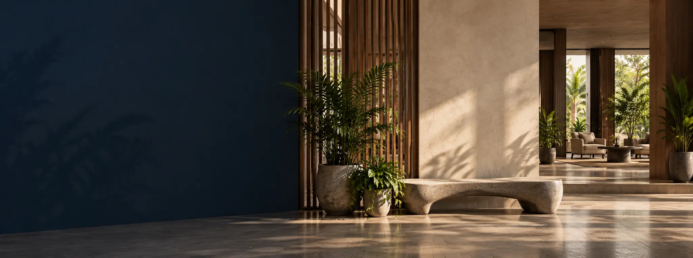

Events
Ideas. People.
A Stronger Profession.
Be part of SLIID’s events, workshops, exhibitions and industry collaborations that inspire, connect and advance the profession.
People · Spaces · A Better Sri Lanka
Featured event

01–05 September 2026
SLIID at KADALLA 2026
Join SLIID at Sri Lanka’s premier international construction, architecture and interior design exhibition.
Register interest →Upcoming events


Be part of what’s next.
Join upcoming events and a growing community of interior design professionals.